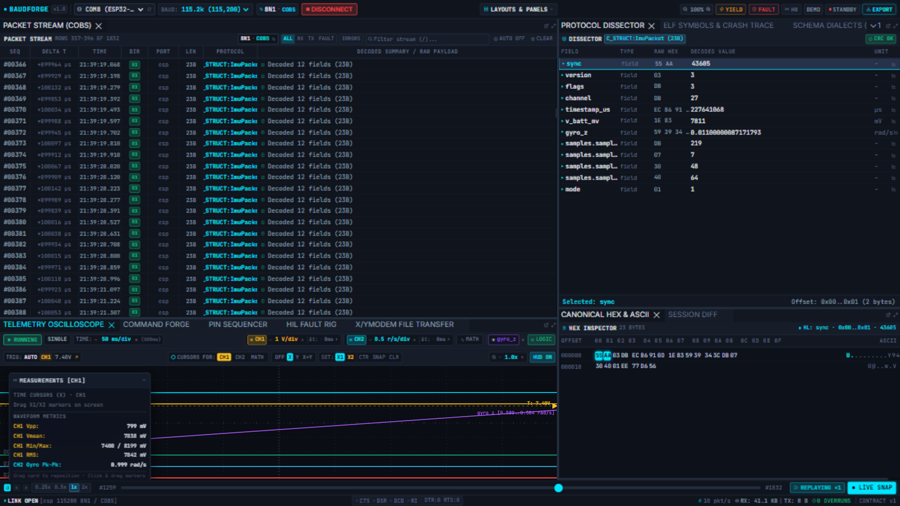

DVR & Replay
The DVR bar at the bottom of the workbench is the time machine: pause the live capture, step frame by frame, scrub the buffer, or replay it at a chosen speed — while the engine keeps capturing in the background.

The controls
| Control | What it does |
|---|---|
| Space | Pause/resume the live capture. While paused the bar reads PAUSED AT T-x.xxxs — the age of the frame you are looking at. |
| ◀ / ▶ (Step) | One frame back / forward through the buffer. Every panel (stream, dissector, hex, scope) follows. |
| DVR scrubber | Drag the playhead to any point of the buffered window; the selection snaps to the nearest frame. |
| 0.25x / 0.5x / 1x / 2x | Replay speed. |
| REPLAY (buffered) | Walks the buffer from the current scrub position at the chosen speed, updating stream/hex/scope as it goes. The bar shows REPLAYING ×0.25 while it runs. |
| ● LIVE SNAP | Jump back to the live tail and resume following. |
| Arrow keys | Step frames while paused (when focus is not in a text field). |
How replay behaves
- Pausing leaves the cursor on the newest frame; pressing REPLAY from there rewinds to the buffer start (replaying one frame would end instantly). If you scrubbed to the middle first, replay resumes from that position.
- Nothing is lost while replaying: the engine keeps appending to the live buffer and any active REC vault; replay only moves your view. LIVE SNAP returns you to the present.
- The buffer holds the last 10,000 frames. For a longer look-back, record a vault and use Review.
Workflow B — the scope-click shortcut
The fastest way to use the DVR: click a point of interest on the oscilloscope — the playhead, stream selection and every inspector jump there instantly.
Tips
- Stepping frame-by-frame while reading the Hex Inspector is the cleanest way to spot when a field first goes wrong.
- The
<1x>chips and step buttons live in the same bar across all layouts — they follow the active panel.